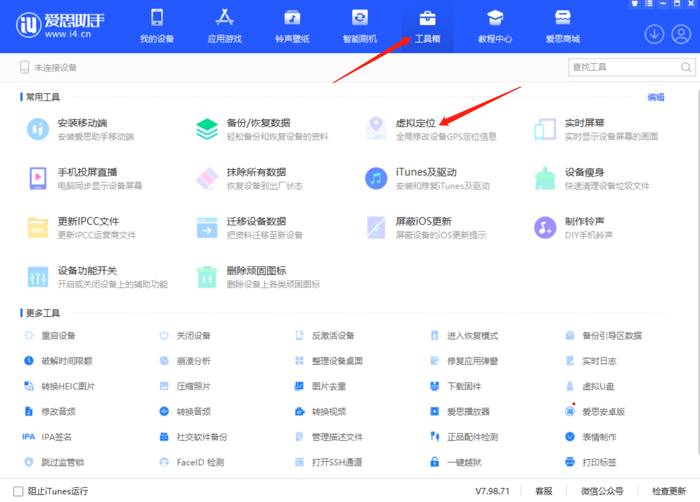
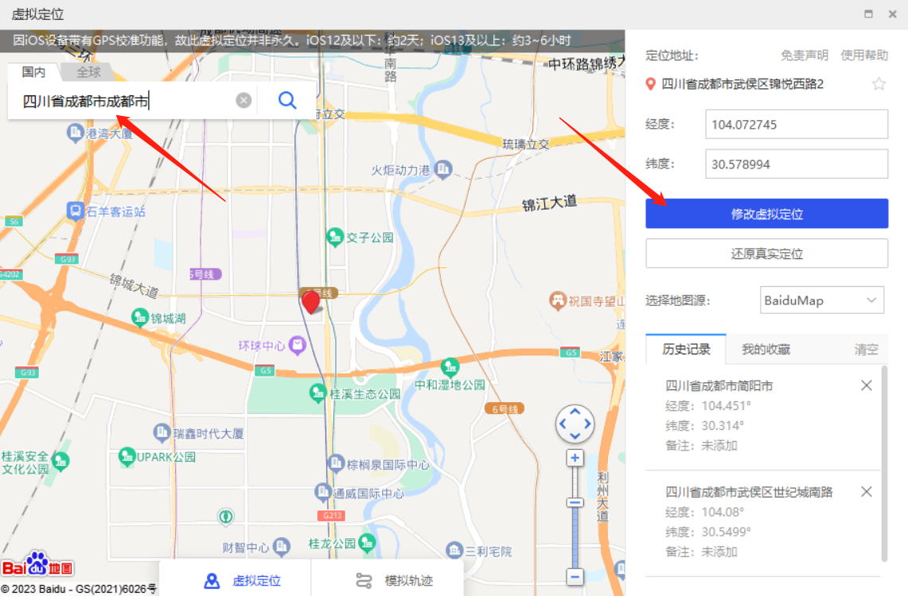
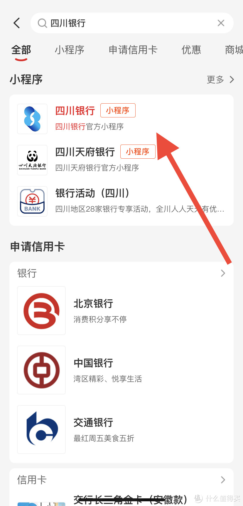
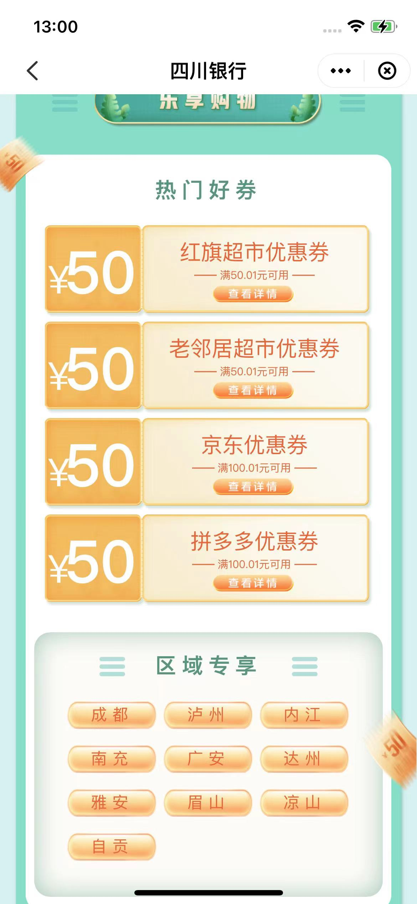
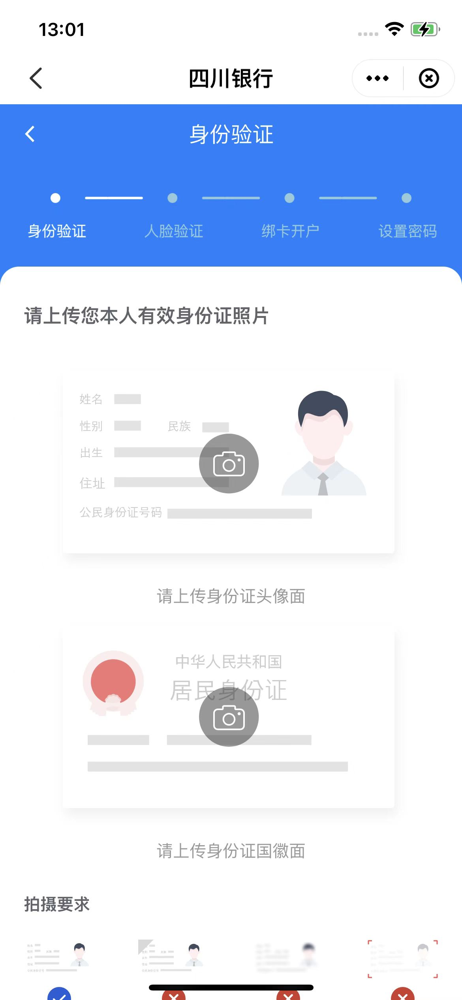

必需：苹果手机、电脑、成人且有身份证、一张有用的银行卡、云闪付账号
因为是四川银行的活动，所以要把位置改到四川过去
定位教程：1、首先电脑下载爱思助手（百度下载即可）
2、苹果手机拿数据线连接电脑,然后打开工具箱找到下面虚拟定位点击进去

3、左侧搜索框搜索成都，再点击修改虚定位

附加：如果提示：要打开手机开发者模式，就按照提示去设置——隐私与安全性里面打开第一次打开可能要重启手机，再去修改虚拟定位就能成功了
————————————————————修改定位成功后就看下方云闪付用户的，如果已经注册了，就直接看下面的薅羊毛教程————————————————————
如果是还没有开通过云闪付的用户，请点击这里云闪付
或者扫描下方二维码下载
下载好云闪付后注册实名认证绑定一张有用银行卡就行了
————————————————————
我们打开云闪付👉顶部🔍 四川银行 如下图👇

第一个小程序打开，主页顶部流动窗口【川行有礼 乐享青春】点我要参与👇

找到京东100减50优惠卷去领取，根据流程操作实名，绑定一张有50余额的银行卡！

身份证认证完成后，然后根据操作走就行，然后绑卡开户设置支付密码，然后就会现实领取成功！

然后点资金转入，转到四川银行50块钱，根据操作走，转完后打开京东，搜索京东e卡100元实体卡，随便找一个100块钱的，购买提交订单后选择云闪付支付，再选择四川那个卡支付，就是付款50块钱了，收货地址填自己家就行。买完等收货就好了！